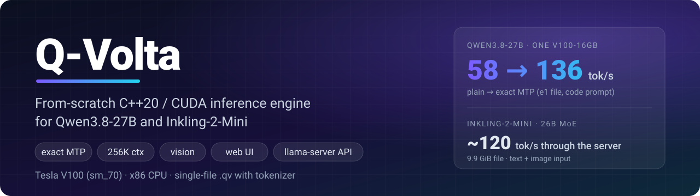
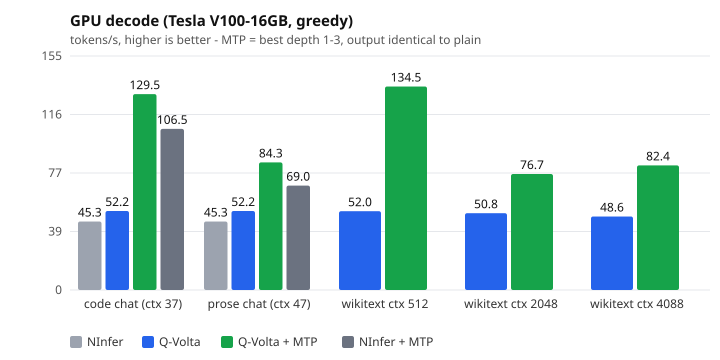
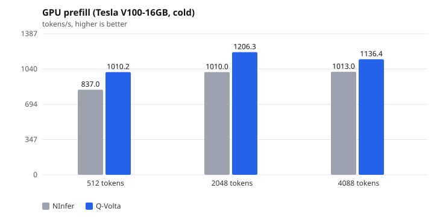
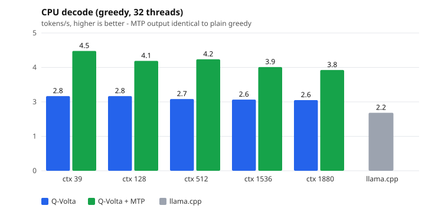
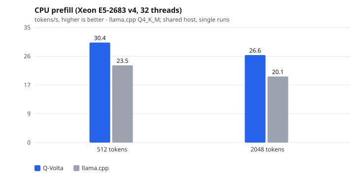

Fast LLM inference on one Tesla V100 and on plain CPUs
An original C++20 / CUDA engine for Qwen3.8-27B and Inkling-2-Mini: single-file quantized models, exact MTP speculative decoding, 256K context on a 16 GB card and an OpenAI / llama-server compatible API.
.qv file (12.6 GiB for the higher-quality e0)Results
Tesla V100-SXM2-16GB, greedy decode. MTP = best depth 1–3; its output is bit-identical to plain greedy decoding.




Comparison with llama.cpp on the same V100
llama.cpp 9d6f04f (CUDA, sm_70), same prompts, 3 interleaved rounds, quality against one common reference (llama.cpp Q8_0, a near-lossless proxy, not BF16). Measured 2026-11-21..23. Protocol and raw data: benchmarks/compare.
| file GiB | ppl (BF16 8.468) | KL to Q8_0 | decode tok/s | with MTP | prefill 2048 | max ctx | |
|---|---|---|---|---|---|---|---|
| llama.cpp Q3_K_M | 12.77 | 8.905 | 0.054 | 42.3 | 74.8 | 931 | 132K (q4_0) |
| Q-Volta e0 | 12.63 | 9.511 | 0.102 | 52.2 | 131.7 | 1250 | 140K (int4) |
| llama.cpp IQ3_XXS + imatrix | 10.89 | 8.992 | 0.075 | 38.7 | 68.8 | 779 | 219K (q4_0) |
| Q-Volta e1 | 10.44 | 9.278 | 0.092 | 57.6 | 135.9 | 1250 | 267K (int4) |
Reading: at about equal bytes Q-Volta decodes and prefills faster and fits a longer int4 KV cache; llama.cpp's quants are clearly better in quality. Improving our quantization is the current research item. Max context is an allocation probe, not a quality claim.
Quick start
cmake -S . -B build -G Ninja -DCMAKE_CUDA_COMPILER=/usr/local/cuda/bin/nvcc && ninja -C build
hf download q-project/Qwen3.8-27B-QVolta qwen38-27b-e1.qv tokenizer.json --local-dir models
./build/qv_server --model models/qwen38-27b-e1.qv --tokenizer models/tokenizer.json \
--backend cuda --kv int4 --max-ctx 131072 --mtp --mtp-depth 2
curl localhost:8080/v1/chat/completions -H 'Content-Type: application/json' \
-d '{"messages":[{"role":"user","content":"Hello"}],"max_tokens":64}'
CPU-only build: add -DQV_CUDA=OFF and use --backend cpu. A Dockerfile (GPU and CPU targets) is provided; it has not been built by the authors yet.
Models
Qwen3.8-27B-QVolta
e110.44 GiB, ppl +9.6%e012.63 GiB, ppl +12.3%- native MTP head, 256K context, pi-adapter supported as a merged model
Inkling-2-Mini-QVolta
- 9.89 GiB (26B MoE, 3.4B active, looped layers)
- ~120 tok/s decode on the V100 through the server
- image input (vision sidecar, 0.6 GiB) and an optional exact MTP drafter (0.55–1.73×, text dependent)
What is inside
- int8 dp4a GEMV decode at 81–99% of HBM peak, CUDA graphs
- tensor-core flash prefill
- exact multi-token verify for MTP
- AVX2 CPU backend with huge-page weights
- single-file
.qvcontainer with tokenizer and chat template - 2–8 bit bit-planes, GPTQ-style calibration
- int4 KV cache (KIVI-style)
- llama-server flags and endpoints
- OpenAI chat / completions, tools, grammars
- jinja chat templates
- embedded web UI, Anthropic
/v1/messages, multi-model routing
Honest caveats
- Quality at equal size is behind llama.cpp's K-/I-quants (table above); e1 is also weaker than e0 on our agentic check.
- The CPU comparison is not load-matched (shared host, single runs); the plain-vs-MTP ratios are the reliable part.
- One decoding sequence at a time; requests queue. No continuous batching.
- Inkling: engine matches the Hugging Face implementation at bf16-noise level on 4 prompts; whole-model long-context (>8K) parity is untested.
- ExLlamaV2/V3, vLLM and SGLang were not run on this V100 (reasons in the comparison README).
Details: PERFORMANCE.md · QUANTIZATION.md · PROGRESS.md